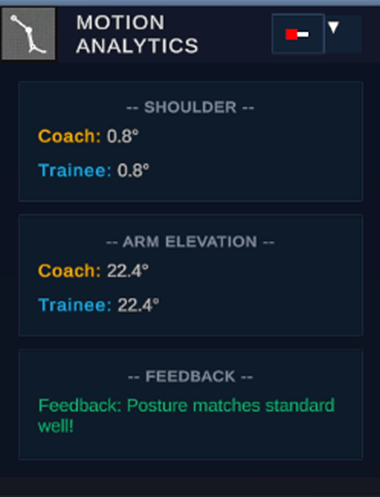

ANALYTICS
BIOMECHANICAL ENGINE • SUB-DEGREE PRECISION
Every angle. Accounted for.
Real-time joint angle computations between Coach benchmarks and Trainee performance, powered by an automated biomechanical rule engine for instant posture correction.

Real-Time Angle Tracking.
Gain instant numerical visibility into joint deviations down to a tenth of a degree:
- Shoulder Alignment: Compares Coach baseline (0.8°) with live Trainee posture in real-time.
- Arm Elevation Dynamics: Tracks continuous elevation angles (22.4°) throughout dynamic reach and swing motions.
- Differential Tolerances: Dynamically flags variance beyond clinical or athletic training thresholds.
Automated Posture Evaluation.
Real-time guidance that coaches can rely on and athletes can immediately understand:
- Contextual Feedback Banner: Instant alerts confirming adherence (e.g. "Feedback: Posture matches standard well!" in green).
- Objective Scoring: Removes subjective assessment with verifiable mathematical degree differentials.
- Injury Prevention: Highlights improper hyperextension or misaligned kinetic chains before injury occurs.
Analytics Specifications
Processing Latency
< 5ms Real-Time
Angular Precision
0.1° Decimal Resolution
Joint Chains Tracked
Shoulders, Arms, Spine, Knees
Feedback Latency
Instantaneous Rule Evaluation